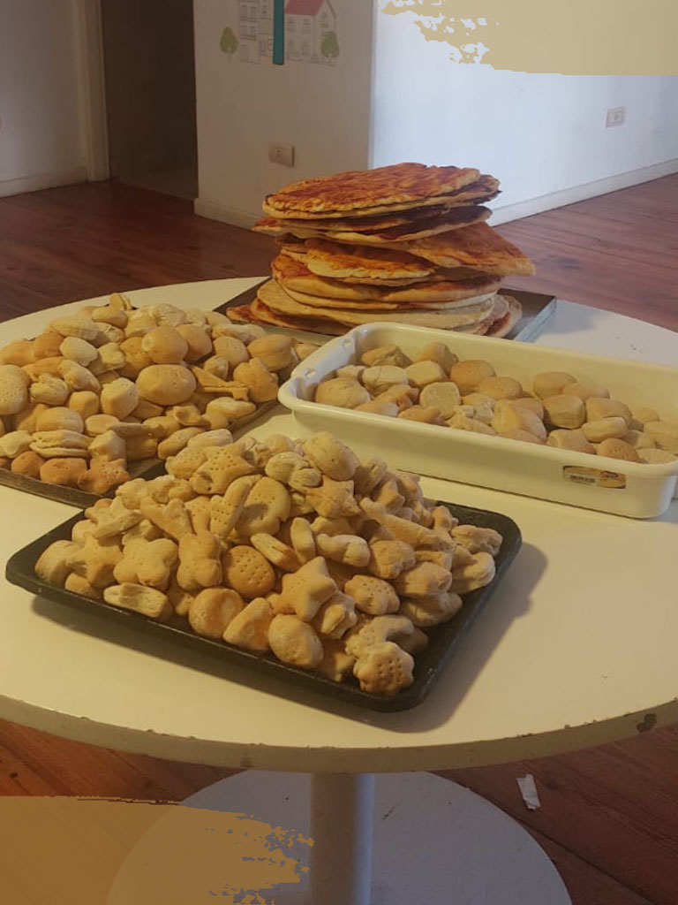
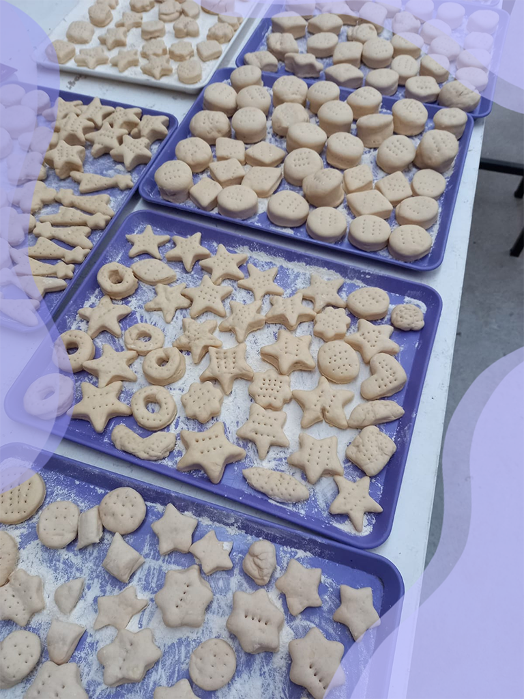

Fundación Sí (ACAP)
Por: Azul Peluso y Victoria Vallarino 5ºB
El primer grupo de alumnos de 5to año fueron a la “Fundación Sí” a cumplir con las horas ACAP implementadas a partir de éste año para todos los alumnos del último año de la escuela secundaria.
Durante los meses de abril y mayo, los alumnos concurrieron a la fundación los días lunes y jueves de 9 a 13 hs en la sede de Colegiales (Av. Giribone 927) para cumplir con las horas sociocomunitarias de las ACAP (actividades de aproximación al mundo laboral y estudios superiores).
 
Se realizaron las actividades que normalmente día a día los voluntarios cumplen, por ejemplo, armado de palets para las residencias universitarias, juegos para los niños que van a los comedores, preparación de comida para las personas en recuperación, etc.
A la vez los voluntarios junto al fundador Manuel Lozano, compartieron y brindaron información sobre todas las actividades que se realizan dentro de la fundación, lo que conlleva y algunos casos bastante chocantes pero con la historia tras la superación.
La búsqueda de voluntarios y donaciones siempre está abierta, si querés participar te dejamos el instagram para que puedas contactarte con ellos y enterarte de todas sus campañas anuales.
@sifundacion